A comprehensive, high-fidelity 3D replica of Albuquerque, New Mexico built in Blender for open-world game creation. Features all iconic show locations: Walter White's residence, Los Pollos Hermanos, Saul Goodman's office, the subterranean Superlab, and the To'hajiilee desert cook site.
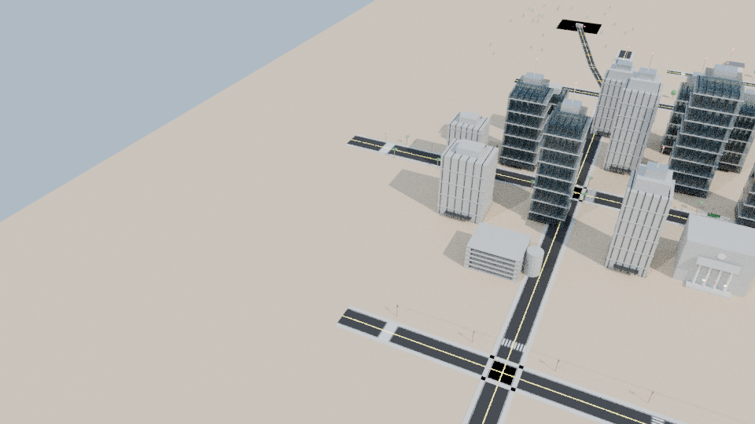
Looking East toward the 115m Sandia Mountain ridge, Route 66 boulevard, and Downtown skyline.
Click any radar pin to jump directly to that landmark's 3D render, lore details, and coordinates.
Every landmark is modeled down to show-accurate exterior/interior details, easter eggs, and pre-packaged with individual .blend and .glb files.
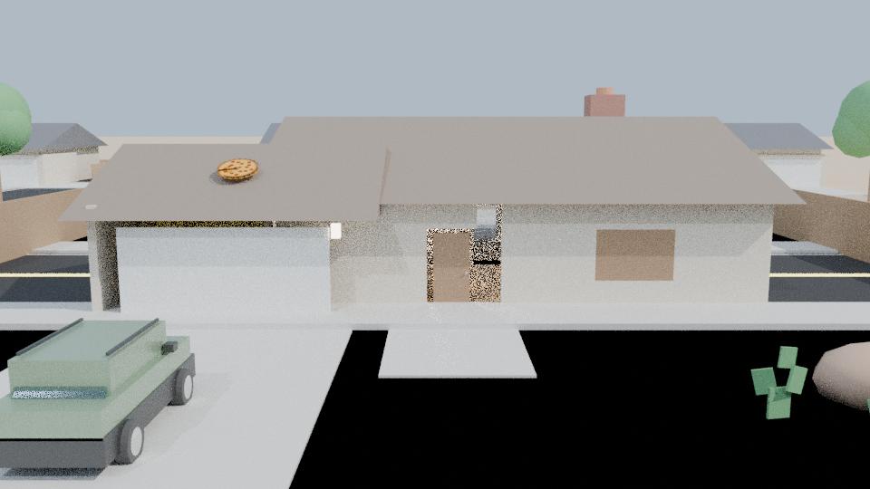
Real Location: 3828 Piermont Dr NE, Albuquerque
Walter and Skyler White's iconic Southwest ranch house. Features attached two-car garage, pitched shingle roof, desert gravel xeriscape yard, and Walter's fern green Pontiac Aztek in the driveway.
The setting of iconic scenes: the burning of the cash, the floating eye from Wayfarer 515, and the family cookouts. Modeled with translucent water shader, wooden patio trellis pergola, chaise lounge chairs, and perimeter cedar fence.
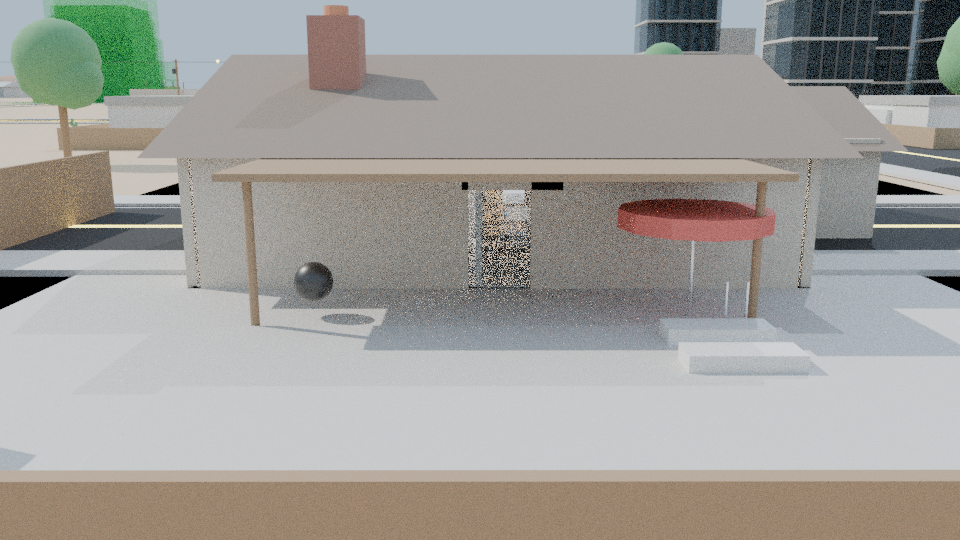
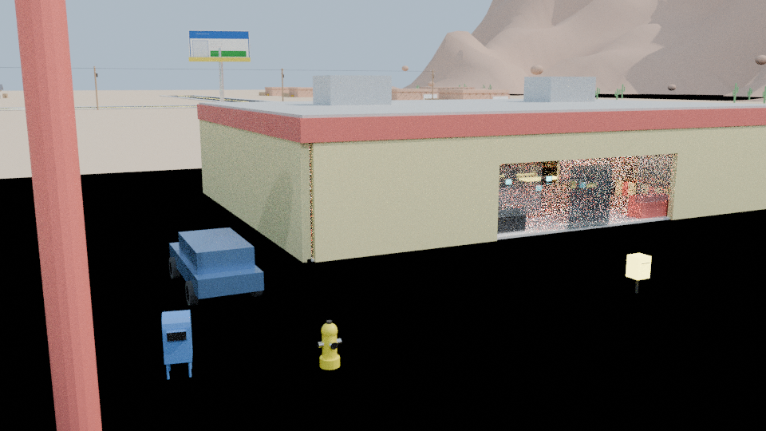
Real Location: 4257 Isleta Blvd SW (Twisters), Albuquerque
Gustavo Fring's flagship fried chicken franchise restaurant and front operation. Adobe stucco architecture with signature yellow/red horizontal bands, glass storefront, drive-thru lane, and commercial asphalt lot.
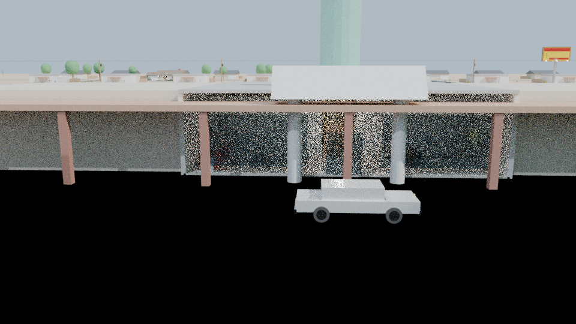
Real Location: Montgomery Blvd Strip Mall, Albuquerque
"Better Call Saul!" Headquarters in an American strip mall corner. Neoclassical white Doric columns support the pediment, crowned by the famous towering inflatable Statue of Liberty on the roof.
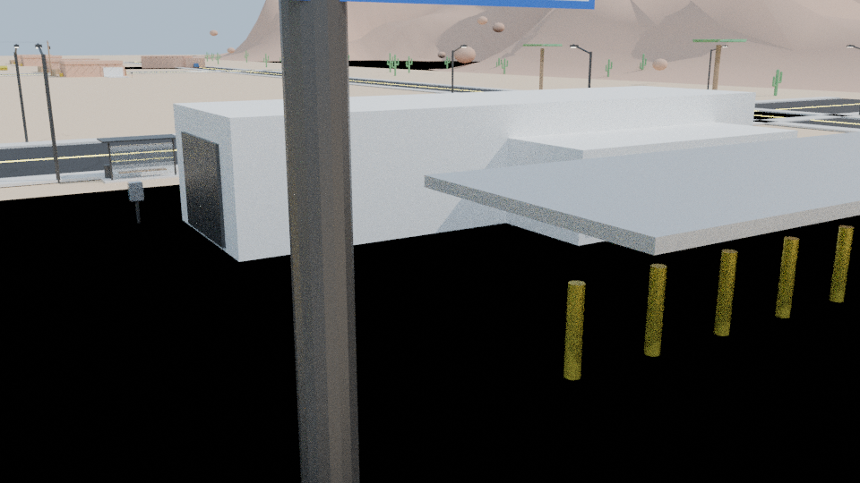
Real Location: 9516 Snow Heights Cir NE (Octopus), Albuquerque
"Have an A-1 Day!" Walter and Skyler White's laundering enterprise. Features a 30m conveyor wash tunnel, spinning vertical/horizontal foam rollers, customer cashier office, and 6-bay vacuum canopy structure.
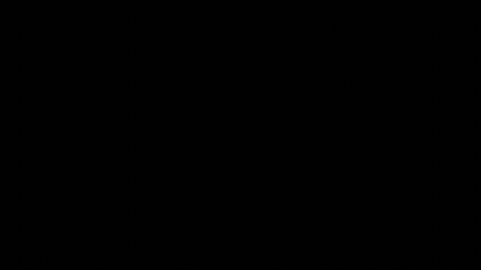
Real Location: 1617 Candelaria Rd NE, Albuquerque
Gustavo Fring's multi-million dollar subterranean meth superlab hidden beneath a commercial laundry facility. Modeled with high-gloss red epoxy floors, twin 4.5m stainless steel distillation reaction vats, and yellow steel catwalks.
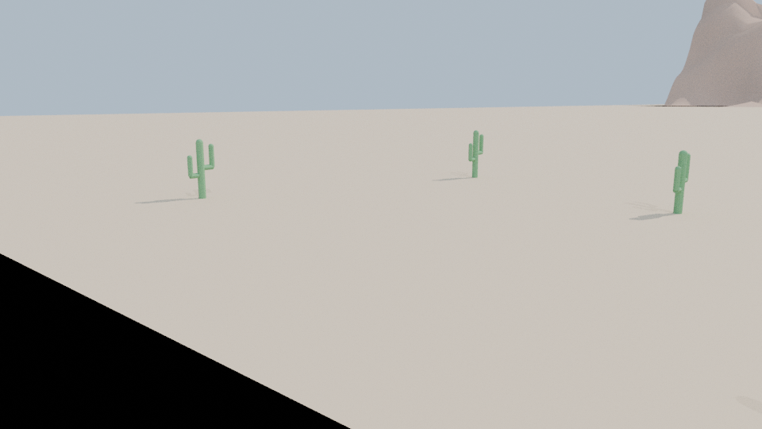
Real Location: Navajo Nation Reservation, New Mexico
The sacred pilot episode site and finale climax location. An elevated sandstone mesa surrounded by desert boulders and saguaro cacti, housing the legendary 1986 Fleetwood Bounder RV ("The Crystal Ship").
Every iconic Breaking Bad location is modeled from the inside out with hollow architecture, dedicated room illumination, furniture, props, and show-accurate easter eggs.
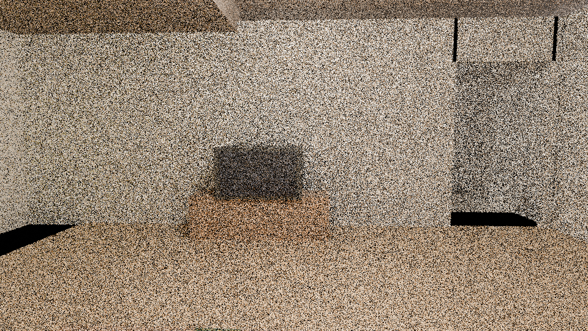
Step inside the iconic Albuquerque home. Fully realized floorplan with hardwood floors, beige carpets, kitchen tiles, and dedicated point light illumination.
Francesca's waiting room leads into Saul's grand private office featuring Neoclassical Greek Doric pillars and the full-wall US Constitution wallpaper.
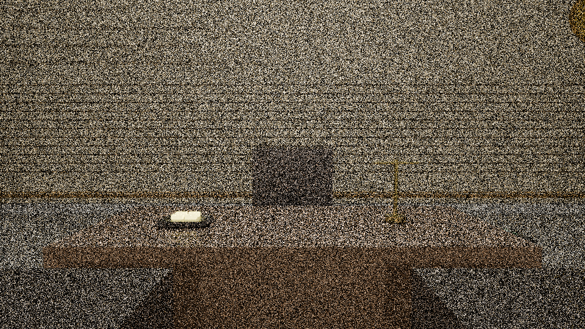
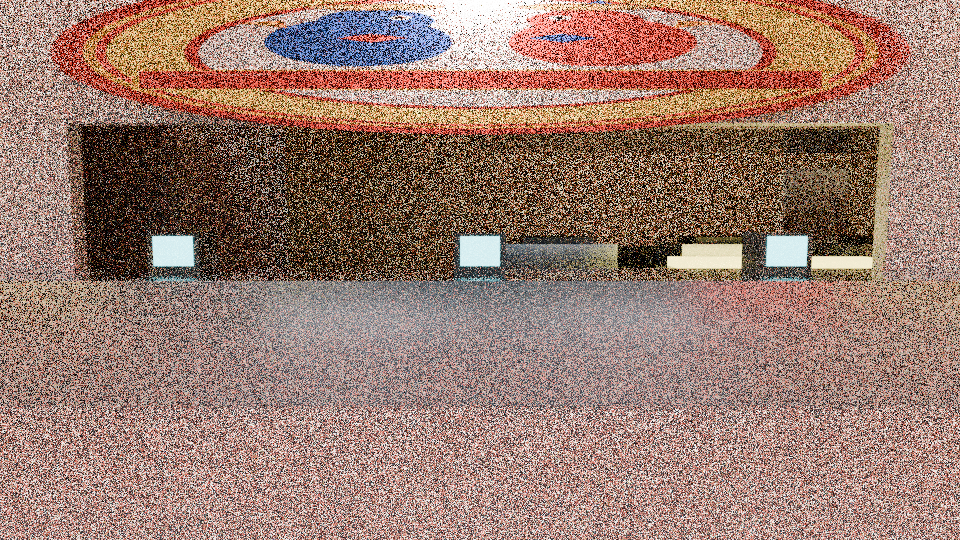
Step through the double glass doors into the pristine fast-food restaurant where Gus Fring watches every detail through overhead surveillance.
Hidden beneath Lavandería Brillante behind sliding industrial Washer #3. A multimillion-dollar subterranean methamphetamine manufacturing laboratory.
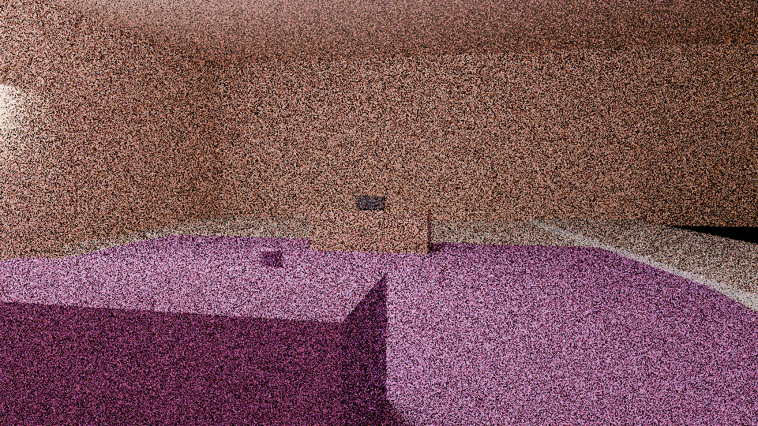
Nestled in the Sandia foothills. Features Marie's signature royal purple carpet living room and Hank's attached garage microbrewery.
Every vehicle is modeled with separated wheel components and pivot points for immediate physics rigging in Unity, Unreal Engine 5, or Godot.
Fleetwood Bounder with cream paint, dual rear axles, orange racing stripes, and bullet hole patches.
Fern green paint, dark lower cladding, split front grille, and sloped hatchback glass.
White luxury body with chrome grille, chrome bumpers, and "LWYRUP" license plate badges.
Navy blue boxy estate wagon with roof rails and discrete understated Los Pollos manager profile.
Step-by-step instructions for importing the 3D city into Unreal Engine 5, Unity, and Godot 4.
breaking_bad_albuquerque_master.glb into Content Browser.Import Uniform Scale = 1.0.One Convex Hull Per UCX is checked for auto-collision.Assets/BreakingBad/.Convert Units = True.UCX_ child meshes as MeshCollider hulls.WheelCollider to vehicle wheel nodes for driving mechanics.breaking_bad_albuquerque_master.glb into Godot project.Node3D in your level scene.Location: /home/ubuntu/BB/
| Package Name | Format | File Size | Description | Download |
|---|---|---|---|---|
| breaking_bad_albuquerque_master.glb | GLB | 3.5 MB | Complete master city, roads, Sandia mountains & all 10 landmarks | Download |
| breaking_bad_albuquerque_master.blend | BLEND | 12 MB | Native Blender 4.0 master file with collections, shaders & lights | Download |
| assets/landmarks/*.glb | PACK | 10 Files | Individual landmark models (Walt, Pollos, Saul, A1A, Superlab, etc.) | Browse |
| assets/vehicles/*.glb | PACK | 4 Files | Vehicles: Bounder RV, Pontiac Aztek, Cadillac DeVille, Gus's Volvo | Browse |
| renders/*.png | PNG | 8 Files (6.1MB) | Cycles cinematic beauty renders from multiple camera angles | Browse |